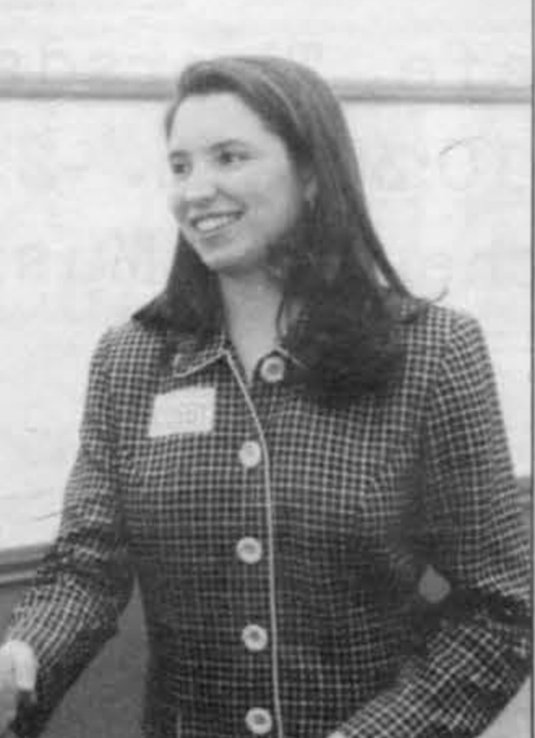
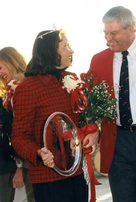

#
Dues to the state association
The treasurer of the Kentucky Board of Student Body Presidents wrote to president Stephanie Cosby requesting payment of the 1998-99 dues, evidence of WKU's continuing seat at the state student leadership table.
Student Government Association · academic year

Letters survive on ice machines in the residence halls, campus safety, food court hours and professors posting office hours. Confirmed as SGA president for 1998-99 by Herald election coverage ("Stephanie Cosby Rolls to Huge Victory," 30 Apr 1998) and by the Kentucky Board of Student Body Presidents' fall 1998 dues letter addressed to her by name and title.
Cosby is documented in office from the start of the 1998 fall semester, when the Kentucky Board of Student Body Presidents billed its dues in a memo addressed to "SGA president Stephanie Cosby." Her congress passed at least thirteen numbered bills that fall, from Murray State fire relief to Bookswap.com, and her officers answered public charges of unproductiveness with a written record of what had passed.
The SGA's 2001 list of presidents records Stephanie Cosby of Greenville as the 32nd president, serving 1998-99, and marks her as having also served as student regent.
Cosby campaigned on financial aid, with the Herald's election-week coverage reporting that she wanted more scholarships. She won the presidency in a rout: the paper's April 30, 1998 election story ran under the headline 'Stephanie Cosby Rolls to Huge Victory,' next to a report on how taxing election day had been for the officer candidates.
Midway through her term she picked up a second title, with the Herald reporting 'Stephanie Cosby Named Queen of Hill' at homecoming in October 1998. Her year in office produced a steady advising-reform push, the failed University Boulevard widening request, the Kappa Alpha aid fight, and ended with the Judicial Council overturning the election to choose her successor.
Sources for this account
Everything the archive holds on Stephanie Cosby, gathered on one page.
Everyone the record shows in office this year. Each name goes to their own page, with every office they held and everything the archive says they did.
Of Greenville; also served as student regent.
Herald 73:53, 30 Apr 1998, "Stephanie Cosby Rolls to Huge Victory"Called Congress to order through the year in place of the president. He set himself goals of a spring turnout of 1,400 voters, every Congress seat filled and a doubling of Provide-A-Ride use, and reported in January 1999 that more than 100 people had used the ride service in the last week of the autumn semester.
SGA Executive Council Minutes, 18-19 Jul 1998Circulated the fall 1998 legislative record to answer charges of unproductiveness, and wrote to president Gary Ransdell on student health services in April 1999.
TopSCHOLAR - SGA Documents/Reports/24Presented the 1998-99 budget to Congress on 1 September 1998 against a balance of $41,783, and reported weekly through the autumn. His goals for the year included extending library hours and creating a book exchange. The surname appears as Rumenier and Rumienier in the 1997 minutes.
SGA Meeting Minutes, 1 Sep 1998Giving the finance report by 13 April 1999, having begun the year as Chief Justice. He reported a balance of $15,276.24 that week. He won a re-run election for vice president of finance for 1999-2000 a fortnight later, on 26 April 1999, after the initial 15 April result was voided.
SGA Meeting Minutes, 13 Apr 1999Appointed at the July 1998 executive retreat and introduced himself to Congress at the first meeting of the year.
SGA Meeting Minutes, 1 Sep 1998Appointed historian at the July 1998 executive retreat; she also chaired the Public Relations Committee from the start of the year and set the Coming Home theme for 1999 as "Mardi Gras on the Hill."
SGA Executive Council Minutes, 18-19 Jul 1998Issued the Executive Council's written response to an anonymous congress member's complaint about the tone of SGA meetings, November 1998.
TopSCHOLAR - SGA Documents/Reports/28A correction: the archive records him only as Vice President. He signed the minutes all year as VP of Administration, called the roll, read Resolution 98-1-F on a Normal Drive crosswalk for first reading, and set the spring 1999 election calendar. He also co-authored Bill 98-10-F, the failed grant to Kappa Alpha after its house fire.
SGA Meeting Minutes, 1 Sep 1998Elected in the spring 1998 general election after leading the primary with 140 votes. He launched SGA's new web page, thanked Jeff Baynham for designing it, and read the year's Congress theme at the first meeting.
SGA Meeting Minutes, 1 Sep 1998Introduced herself to Congress as the new vice president of public relations on 19 January 1999, took over Coming Home and Bowl for Kid's Sake, and handled SGA's Herald advertising.
SGA Meeting Minutes, 19 Jan 1999Sworn in by President Cosby at the first meeting of 1 September 1998, then swore in all committee chairs, appointed officers and class and dorm representatives. He was still swearing in new members on 19 January 1999.
SGA Meeting Minutes, 1 Sep 1998Named to the Judicial Council at the July 1998 executive retreat, having been director of public relations the previous year.
SGA Executive Council Minutes, 18-19 Jul 1998Appointed at the July 1998 executive retreat; he designed SGA's new web page, for which the vice president of public relations thanked him at the first meeting.
SGA Executive Council Minutes, 18-19 Jul 1998Called the Congress meeting of 13 April 1999 to order while the president and executive vice president were counting election ballots.
SGA Meeting Minutes, 13 Apr 1999Appointed at the July 1998 executive retreat. A Joe Morel moves the adjournment in the January and April 1999 minutes; the spellings are not reconciled in the record.
SGA Executive Council Minutes, 18-19 Jul 1998A correction: the archive lists him among the executive officers with an unstated title. The minutes of 17 November 1998 describe him as the Pearce-Ford Tower representative, addressing Congress with remarks attached to the minutes; he held no executive office that the minutes record.
SGA Meeting Minutes, 17 Nov 1998Co-authored Bill 98-10-F allocating $250 to the Kappa Alpha Order fraternity after its house burned on 17 November 1998; the bill failed on second reading on 1 December. He reported that the teacher block resolution had been shelved because Dr Barbara Burch had already implemented it.
SGA Meeting Minutes, 17 Nov 1998Recommended Resolution 98-15-F on publishing the SGA advisor checklist in the schedule bulletins, and postponed Resolution 98-11-F on teacher education indefinitely. He co-authored Resolution 98-7-F with President Cosby on widening University Boulevard, which failed on 13 October 1998, and authored Resolution 99-3-S releasing the Student Health Service reserve fund, which passed on 13 April 1999.
SGA Meeting Minutes, 17 Nov 1998Ran the spring 1999 camp fair, worked on a weekend survey and a proposed SGA scholarship, and authored Bill 99-20-S to extend library hours during finals week, postponed on 13 April 1999 over the cost of student workers' overtime.
SGA Meeting Minutes, 13 Apr 1999Appointed at the July 1998 retreat; her committee worked on campus lighting, ashtrays, Habitat for Humanity and more copy machines on campus. She was nominated in April 1999 for both the Dero Downing and Mary Angela Norcia awards.
SGA Meeting Minutes, 17 Nov 1998 Herald 73:50, 16 Apr 1998Introduced himself as the new campus improvements chair on 19 January 1999.
SGA Meeting Minutes, 19 Jan 1999Appointed public relations chair at the July 1998 executive retreat, after losing the spring 1998 general election for Public Relations Director. By the first Congress meeting of September the committee was reporting under Amanda Cole.
SGA Executive Council Minutes, 18-19 Jul 1998 Herald 73:48, 9 Apr 1998Reported for the committee from the first meeting of 1 September 1998; her committee drafted the measure to help the Kappa Alpha members after the fire and set the 1999 Coming Home theme.
SGA Meeting Minutes, 1 Sep 1998Ran the Hillraisers through the basketball season and arranged a meeting with Coach Felton in November 1998. She was nominated in April 1999 for both the outstanding Congress member and Charles A. Keown awards.
SGA Meeting Minutes, 17 Nov 1998The 17 things student government staged or ran for the campus this year, drawn from the chronology below. Every one of them also appears on the programmes page, which runs the whole sixty years together.
The treasurer of the Kentucky Board of Student Body Presidents wrote to president Stephanie Cosby requesting payment of the 1998-99 dues, evidence of WKU's continuing seat at the state student leadership table.
The Herald reported SGA wanted sprinklers added in the dorms, while Bill 98-1-F created a checklist of questions for students to ask their advisors. Days earlier the paper had counted the association's legislative efforts trailing the previous year, and a letter in this issue accused it of wasting time and money.
Bill 98-2-F addressed allocation of funds to the Murray State University Fire Relief Fund on September 30, 1998, one of the rare occasions the body's legislation directed money off campus.
Resolution 98-7-F requested that University Boulevard be widened and that a traffic island be added for pedestrians. The Herald reported the following week that the University Boulevard proposal had failed, but the advising checklist was approved and grew into a run of advising-reform legislation through the fall.
SGA Records: Resolution 98-7-F, 6 Oct 1998Read it on this site
Bill 98-3-F, dated 6 October 1998, created a homecoming float committee. Two weeks later Bill 98-6-F funded the joint SGA and Hillraiser float itself.
TopSCHOLAR - Bill 98-3-F, Creation of Homecoming Float Committee
Bill 98-4-F contributed $300 to the second annual Women of Western (W.O.W.) Conference. The conference paired a keynote address with workshops on women's issues, leadership and communication, presented in part by WKU faculty and staff.
$300
In a single October session the legislative record lists Bill 98-5-F for a coffee house for Pride Week and Bill 98-6-F for a joint SGA and Hillraiser Homecoming float, both dated October 20, 1998. The fall slate also included bills for a W.O.W. conference, ashtrays outside residence halls and an SGA survey.
Bill 98-7-F, dated 23 October 1998, authorised SGA to buy thirty ashtrays for campus. Cigarette receptacles had been an SGA request since Resolution 93-3-F on sand barrels five years earlier.
TopSCHOLAR - Bill 98-7-F, Placing Ashtrays Outside Residence Halls & Campus Buildings
Bill 98-8-F, dated 26 October 1998, provided for a survey of weekend activities. The congress was under public pressure that autumn over what it did, and answered the charge directly in the Herald in December.
The Herald reported 'Stephanie Cosby Named Queen of Hill' at homecoming. SGA had its own stake in the festivities that fall, funding a joint homecoming float with the Hillraisers.
Bill 98-9-F divided the $6,200 budgeted for Organizational Aid among 41 student organisations, a list the committee settled in two meetings running to over six hours. Awards ran from a floor of $100 to the Residence Hall Association's $205, and reached groups from Free the Planet to the Jewish Student Organization.
$6,200 shared among 41 organisations
SGA Bill 98-9-F, Organizational Aid Recipients, 27 Oct 1998 (TopSCHOLAR)
Bill 98-5-F funded a coffee house co-sponsored with the African-American Players, scheduling it for Thursday 5 November 1998 at 9.30 p.m. in Niteclass. The bill described it as a place for students to share their creative talents and as the academic component of Pride Week. The bill is the plan for the evening; no report of how it went has been found.
An anonymous congress member wrote to the Executive Council about the tone and mood of SGA meetings. Mitchell Bailey issued a written response a week later, and both documents survive in the SGA records collection.
Bill 98-10-F proposed allocating funds to the Kappa Alpha fraternity after its house burned. The proposal set off the sharpest fight of the fall.
Bill 98-11-F, dated 30 November 1998, proposed mandatory SGA orientation for incoming members. It was filed in the same week as the Bookswap.com sponsorship and the 1999 Camp Fair funding.
Bill 98-12-F addressed SGA sponsorship of Bookswap.com, an early attempt to use the web against textbook prices, and Bill 98-13-F, the next day, addressed funding for the 1999 Camp Fair -- the last item recorded in the fall 1998 legislative archive.
Bill 98-13-F committed SGA to co-sponsor the 1999 Camp Fair with the Career Services Center on 4 February 1999 in Downing University Center. Over 100 companies were to be invited, and the bill noted that the previous year's fair had drawn positive comment from employers and students.
The Herald reported some SGA members were upset after the group voted down aid to the fraternity, and a companion letter said SGA had 'abandoned' the Kappa Alphas. Letters defending and attacking the decision ran for the rest of the semester.
Vice president Matthew Bastin circulated a memo of the fall's passed legislation to the SGA advisor, officers, committee heads and the Herald's editor, answering accusations that SGA had been unproductive. The list itself was the rebuttal.
Bill 99-1-S set 11 March 1999 as Faculty Appreciation Day with a catered reception at the Faculty House at 4 p.m. The reception was chosen as the occasion to present the Teacher Excellence Award to the outstanding faculty member of the year.
Bill 99-4-S built a nomination procedure around the existing Excellence in Teaching Award so that one faculty member in each of WKU's six colleges could be honoured. Students nominated a professor on a form due in the SGA office by 4 p.m. on 1 March 1999, and the awards were presented at the 11 March reception.
TopSCHOLAR - Bill 99-4-S, Excellence in Teaching Award Implementation
Bill 99-5-S, dated 16 February 1999, provided for an open forum for students. Public forums had been SGA business since Bill 94-9-F established a series of them in 1994.
Resolution 99-2-S, Legislation to be Filed at Helm Library, is dated 16 February 1999. It called for a set of SGA resolutions to be kept on file at Helm Library.
Bill 99-7-S, amending the SGA constitution, is dated 2 March 1999 in the legislative archive. The text was not retrievable, so what it changed and whether it passed is not established here.
Bill 99-15-S disbursed $996 in child care grants, giving $166 each to six students in the WKU child care programme. The committee decided the awards with a representative of WKU Child Care.
$996, $166 each
Bill 99-12-S contributed $300 to the WKU Student Social Workers Organization to help host the Kentucky Association of Social Work Educators conference on 8 and 9 April 1999. Its theme was "Strength through Diversity" and it drew registrants from universities and community agencies across the state.
$300
TopSCHOLAR - Bill 99-12-S, Allotment of Funds for KASWE Conference
Bill 99-13-S, dated 23 March 1999, amended the SGA constitution to make officers representatives on the University Center Board, the body that programmed campus entertainment. It passed in the same session as the child care grants and the KASWE conference funding.
TopSCHOLAR - Bill 99-13-S, SGA Representatives to University Center Board
Bill 99-19-S allocated up to $350 for a co-ed volleyball tournament on 22 and 23 April 1999. The authors wanted a recreational event to bring students together in the run-up to finals.
up to $350
Bill 99-18-S reallocated the funds set aside under Bill 98-4-S for an electronic display board, having found the sign badly underestimated, and put them toward a stage for the south lawn of Downing University Center. The bill argued the stage would carry tailgates, band concerts and other outdoor events.
TopSCHOLAR - Bill 99-18-S, Reallocation for Downing University Center South Lawn Stage
Bill 99-16-S, Congressional Eligibility Requirements, is dated 30 March 1999 in the legislative archive; its own description says it amended the constitution's Judicial Council requirements. The text was not retrievable, so its full content and whether it passed are not established here.
Bill 99-21-S sponsored a coffee house in the Helm Library student lounge during finals week, as an incentive to use the library and a place to take a study break. It passed on 20 April 1999.
TopSCHOLAR - Bill 99-21-S, Sponsoring of Finals Coffee House
Bill 99-20-S committed SGA to work with the university to keep Helm-Cravens open until 2 a.m. from 3 to 6 May 1999. It passed on 20 April 1999.
TopSCHOLAR - Bill 99-20-S, Extending Library Hours During Finals Week
The Herald of 6 April 1999 reported that SGA had bent its election rules, under Ryan Clark's byline. The disputed spring election ran on through a recount and a Judicial Council ruling that overturned the result later that month.
Herald 74:48, 6 Apr 1999 - Clark, "Student Government Association Bends Election Rules"
Amanda Coates campaigned for the SGA presidency in April 1999 on a pledge to bring a major act to the Hill, with the Dave Matthews Band named in her Herald column. The archive records the promise; it records no booking.
Herald 74:47, 13 Apr 1999 - Coates, "Dave Matthews Band Could Come to Hill"
Two days before the general election the Herald reported the Judicial Council questioning candidate Joe Matheis, under a Ryan Clark and Dan Hieb byline.
The Herald reported the spring elections finished under the headline 'Turbulent Elections Complete,' while an opinion piece charged that SGA offered no leadership and a letter questioned the probe of candidate Will Jones. The turbulence was not over.
Amanda Coates and running mate Cassie Martin initially led Will Jones and Kara Yeckering 616-611 for president and vice president; after the Coates-Martin ticket asked for a recount to be sure of the win, the recount that night found an even closer margin, 614-611. A write-in ticket of Dwight Campbell and Kerri Richardson finished third with 145 votes. Total turnout was 1,436 students.
Brandon Griffey defeated Amanda Kirby 729-652 for vice president of administration, and Matt Bastin defeated Duan Wright 806-570 for vice president of public relations, completing the 1999-2000 executive slate.
The Herald reported that SGA's Judicial Council overturned the spring election, with coverage centering on candidate Joe Matheis, an editorial cartoon on nasty campaigns, and an opinion piece describing a 'swath of scandal' around the elections.
Two days later the Herald reported SGA passing a final rush of legislation, while the election fallout continued in the letters column and a story urged students to vote again on Monday. The same issue introduced the incoming president as a self-described workaholic.
Vice president Matthew Bastin wrote to president Gary Ransdell expressing SGA's concerns about student health services, closing the year by taking a student welfare issue to the top of the administration.
The Herald reported on 27 April 1999 that Ryan Morrison had won a Student Government Association election. This followed the Judicial Council's 20 April decision overturning an election tied to candidate Joe Matheis, whom the Council had already questioned in an article printed 13 April. No source found independently names the office Morrison and Matheis contested; this repository's own research file identifies it as vice president of finance, but that specific claim is not otherwise sourced.

Files mirrored on this site from the university archive. Each one links back to the original record.
SGA's resolution asking WKU to widen University Boulevard and add a pedestrian traffic island. The Herald reported the following week that the request had failed even as a companion advising-checklist bill was approved and grew into a run of advising-reform legislation that fall.
From the document · pages 1
Requested the widening of University Boulevard and a pedestrian traffic island.SGA's bill proposing funds for the Kappa Alpha fraternity after its house burned. It set off the sharpest fight of the fall: the Herald reported the following month that the congress voted the aid down, and letters defending and attacking the decision ran for the rest of the semester.
From the document · pages 1
Proposed allocating SGA funds to Kappa Alpha after its house fire.Bills and resolutions from this session, held as files on this site.
Every source cited above, once, with the number of entries that rest on it.
Preferred citation
“1998-99,” SGA 60: Student Government at Western Kentucky University, 1966–2026, revised 26 August 2026, y/1998-99.html
Where a name on this page differs from the plaque in the SGA Chambers, the difference is explained above and recorded on the corrections page.